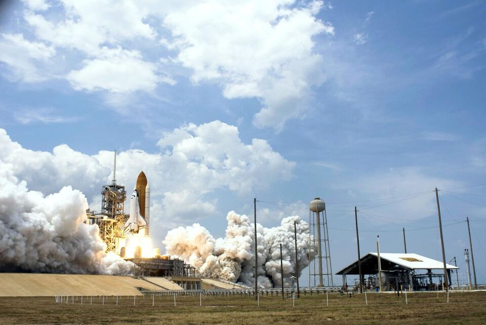
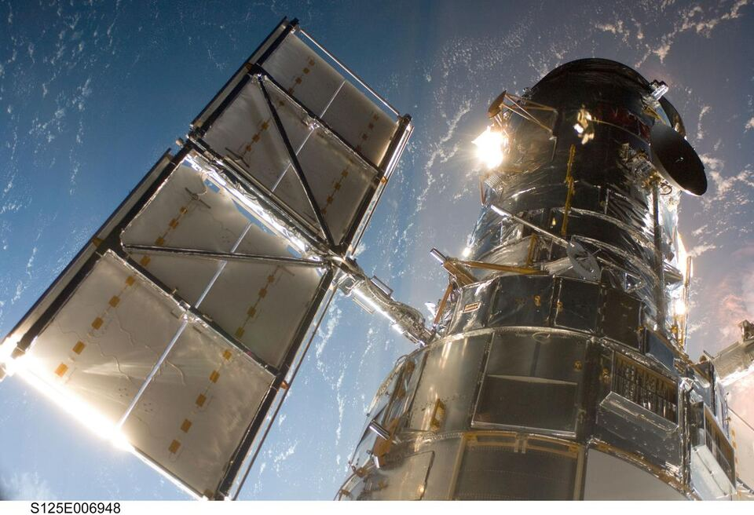
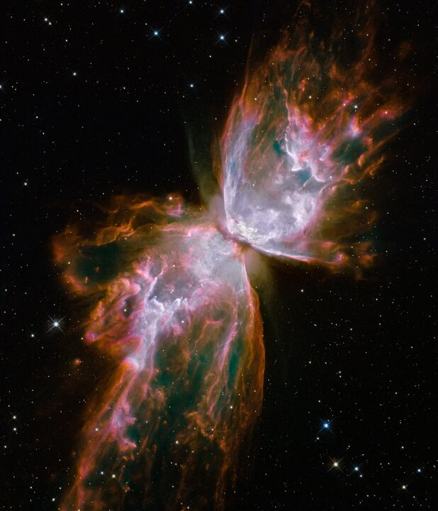
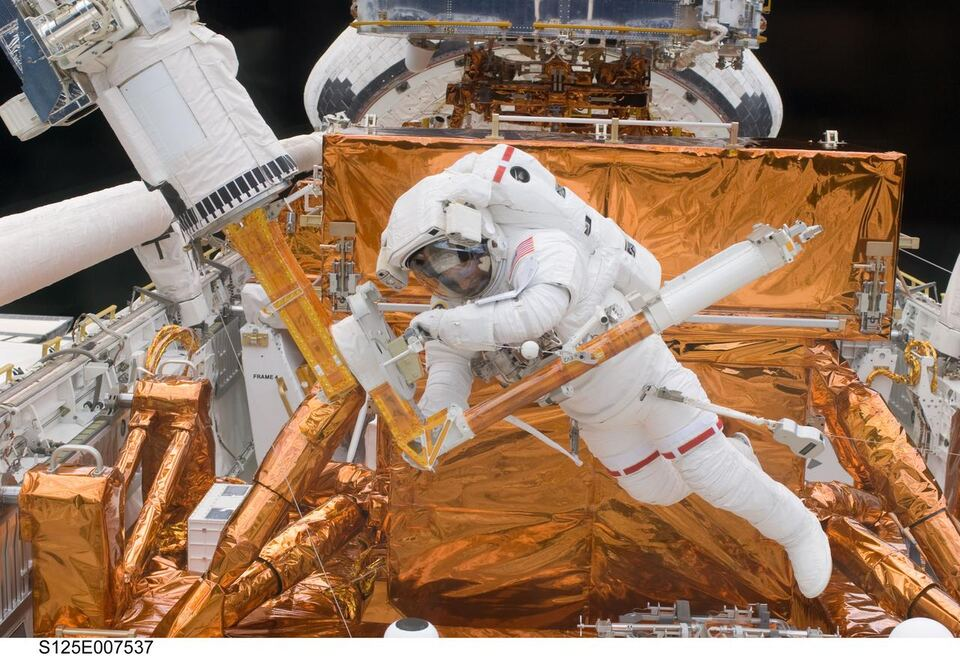
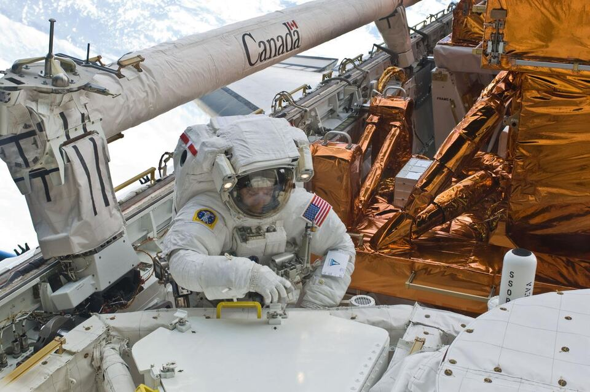
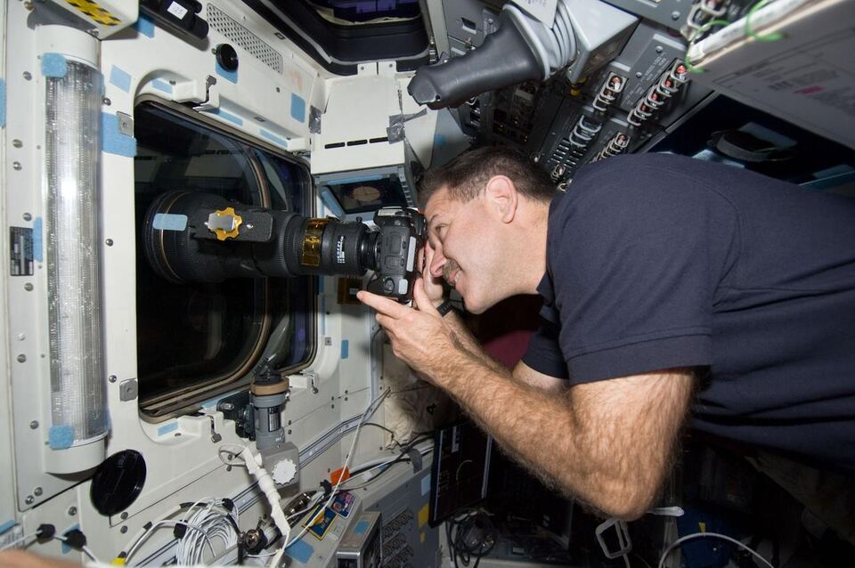

STS-125: SALVA EL HUBBLE
Mayo de 2009. El transbordador Atlantis lleva a 7 astronautas a reparar el telescopio Hubble por última vez. Cada minijuego es una tarea real de la misión, con fotos y datos reales de la NASA.


1. Atrapa el Hubble
13 may 2009 · Persigue al Hubble, sácale una foto y atrápalo con el brazo robótico para bajarlo a la bodega.
JUGAR
2. Cámara nueva
14 may 2009 · Afloja el tornillo atascado, cambia la cámara y alinea los filtros para su primera foto a color.
JUGAR
3. Giroscopios y baterías
15 may 2009 · Cambia los giroscopios y las baterías, y pon a prueba la puntería del Hubble.
JUGAR
4. Reparar el espectrógrafo
17 may 2009 · Quita 111 tornillos, cambia una tarjeta rota y descubre de qué está hecha una estrella.
JUGAR
5. Adiós, Hubble
19–24 may 2009 · Suelta el Hubble, sácale la foto de despedida y aterriza el Atlantis en California.
JUGAR